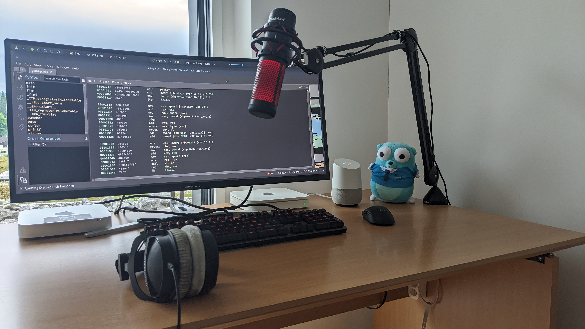

Hello there!
Glad you’re here, if you’re here this means you’re interested in knowing more about who I am and what I do.
Identity
I am Krypton and I’m currently a full-time student. As you have seen on this website multiple times, my username is Krypton. You might ask yourself: “But why this name?”. Well the answer is really simple. When I was searching for a username, in 2015-2016, I was in chemistry class using the periodic table. My favorite number is 36, so I decided to look at which element has this atomic number. After looking, it turned out that Krypton has this atomic number, and I found this name good. I have it since that day :)
My, by far, favorite hobbies are coding, freeriding and anything related to cyber security (still learning every day more). You might have seen from the picture above that I like free riding, I sometimes upload videos when I have had an amazing day.
Programming
I started coding when I was around 11 years old, learned the very basics of Python but nothing really serious. Then I took a long break of coding as it seemed like I wasn’t really attracted by it. When I was around 14 years old I interested myself much more into programming and hacking. I’ve realized how creative and free you are when you want to do something, which ended up in me loving it. I kept learning Python and using it, and also started learning new languages such as Go, C#, Java, PHP, etc. And here I am now, a developer that studies cybersecurity and that does open source projects.
Cyber security
Edward Snowden talking at the 36C3 conferenceCyber security… When I was younger I was amazed by how people could hack a website, a database or simply leak some private documents. After some time I started giving more attention on what kind of tools are being used to do similar things and how people actually proceeded in doing these things. I soon realized it wasn’t as easy as expected… And this is exactly why I started to learn reverse engineering back in 2020 and how to code my own tools and scripts for specific things. I haven’t really spent an enormous amount of time on learning it, but I definitely want to learn even more about this in a near future.
I’ve attended the Insomni’hack conference (2016 & 2022) in Geneva (Switzerland) and the 35C3 & 36C6 conference (2018 & 2019) in Leipzig (Germany). Attending these conferences and seeing the job that security researchers do got me really interested in this topic. After some time I arrived to the conclusion that being a security researcher would be my career path :)
In March 2022 it was the first time I participated to an on-site CTF, at Insomni’hack. If you’re interested about the CTFs I’ve participated to, you can find them on the CTF page.
Languages
It’s hard to estimate the knowledge you have in a language, I tried my best but this probably does not reflect the reality. They’re listed based on how good I know them, at the top the best and at the bottom the least good.
SQL: All my databases are in SQL, so I use it every day.
Python: I use this during CTFs, for some projects or simply when I need to automate something.
PHP: My backend is written in PHP, therefore I use it for some projects.
Java: Java I basically don’t really like it, but at school we are just forced to learn and use this ¯\_(ツ)_/¯ I could resume my motivation in learning and using Java to… yes, another NullPointerException :D
1 | Exception in thread "getMotivation" java.lang.NullPointerException |
Go: This is the language I try to learn a lot, I’m coding in Go for a lot of projects.
C#: I’ve been playing around with C# when I wanted to make some GUI applications for fun, not really my favorite language.
JavaScript: I try to use it more along with Vue.js for my web applications.
C: I know the very basics, wouldn’t really be able to code a project in C.
TypeScript: I’m not really interested in it but I use it with Angular for some projects.
Coding & Reverse Engineering Laboratory
.<"/>Do you see that cute little Gopher looking at you? >.<I have a very basic coding setup that I really like, here are some of the most important peripherals, components, tools, etc. that I use on a daily basis:
Communication Applications
Content Creation
- DaVinci Resolve - For the video editing
- GIMP - For the thumbnails
- GoPro Hero 9 Black - For recording freeride videos
IDEs
I use the Material Theme plugin on all the IDEs of the JetBrains collection with the theme Deep Ocean.
- C/C#: Rider
- Go: GoLand
- Java: IntelliJ Community
- PHP: PhpStorm
- Python: PyCharm Community
- Websites in general: WebStorm
Operating System
- Archcraft: For coding and overall daily usage.
- macOS: For testing my projects on macOS.
- Windows 11 Insider (Dev Channel) - For school and testing my projects on Windows. Also using WSL with Ubuntu
Peripherals
- Boom Arm: RØDE PSA1
- External hard drive (backups & ethernet): AirPort Time Capsule
- Headphones:
- Coding: Beyerdynamic DT 770 Pro Black Edition
- Travelling & all-day usage: Sony WH-1000XM3 Black
- Keyboard: Logitech G G413 Carbon
- Loudspeakers: Google Home (couldn’t find a good link…)
- Microphone: HyperX QuadCast
- Monitor: LC-Power LC-M34-UWQHD-100-C
- Mouse: Logitech G Pro Wireless
- Phone: Google Pixel 4 Black
Reverse Engineering Tools
- Binary Ninja - The best reverse engineering tool I’ve ever used
- Cutter - Basic Reverse Engineering tool (GUI version of radare2)
I often switch from Binary Ninja to Cutter when analyzing files and opposite as each tool has its advantages.
- Ghidra - A tool made by the NSA
- gdb - An awesome tool for debugging
- IDA Freeware - Basic Reverse Engineering tool
- radare2 - The first tool I’ve ever used
- x64/x32dgb - Debugging applications live (never really used it)
- Windows Sandbox - Basically to run some malware and see how they work
There’s pretty much nothing else to say about me, so I will stop writing here :)
Hopefully you will enjoy my future projects and stay in touch with me. Do not hesitate to contact me via email, Discord or wherever you want (see “Find me on…”) if you have any questions.
~ Krypton